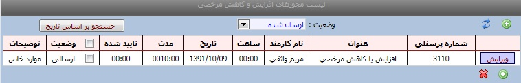
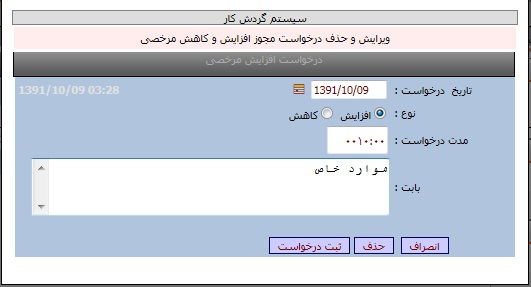

|
افزایش و کاهش مرخصی
|
 
|
|
افزایش و کاهش مرخصی
|
|
افزایش و کاهش مرخصی امکانات: نمایش لیست درخواستهای افزایش و یا کاهش
مرخصی
ثبت و ویرایش و حذف درخواستهای افزایش و یا کاهش
مرخصی

روش ثبت یک درخواست :
ابتدا کلید جدید را
می زنیم سپس مطابق تصویر از منوی تاریخ ،تاریخ درخواست و نوع مرخصی (افزایش یا کاهش)را
وارد نموده و در قسمت مدت درخواست ،مدت مرخصی ساعتی را وارد نموده و درصورت داشتن
توضیحات ،درقسمت بابت توضیحات لازم را تایپ نمایید سپس با کلید ثبت درخواست، تایید می
نمایید.
روش حذف یک درخواست: پس از ثبت یک درخواست تا
زمانیکه درخواست بوسیله مدیر تایید نشده باشد امکان حذف وجود دارد .
ابتدا گزینه لیست
درخواستها را انتخاب سپس کلید ویرایش را زده و کلید حذف را می زنید تا درخواست از
لیست حذف گردد. کلید وضعیت :بوسیله این کلید
می توانید درخواستهای ارسال شده /رد شده /تایید شده و همه درخواستها را انتخاب
نمایید. کلید جستجو براساس تاریخ
:با کلید جستجو براسا تاریخ می توانید درخواستها را براساس
تاریخهاییی که وارد می نمایید مشاهده
نمایید. 